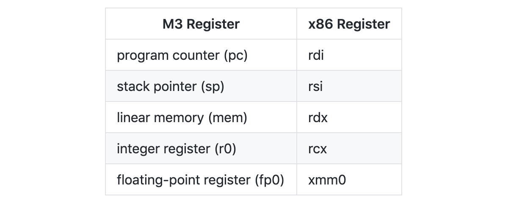

【译】Wasm3 架构剖析
本文将剖析 Wasm3 虚拟机架构的组成结构，以及其性能优化的细节。
Wasm3 是一个高性能的 WebAssembly 解释器。在 Github 上可以看到，它比大多数其他类型的 Wasm 解释器在解释执行 Wasm 字节码的速度上快 8 倍左右；相对的，会比带有 JIT 的 Wasm 编译器慢 4-5 倍。而比单纯的 Native Code 慢 12 倍左右。从整体上来看作为一个解释器，这样的数据其实是十分不错的。
Wasm3 的两个动机
- 在许多情况下，速度并不是主要问题。使用解释器的方式可以改善运行时可执行文件的大小，代码密度，内存使用量，启动延迟等。可移植性和安全性更容易实现和维护。另外，开发依赖会减少很多。像 Wasm3 这样的库很容易被编译并集成到现有项目中。最后，在某些平台（即 iOS 和 WebAssembly）上，我们可能无法在运行时生成可执行代码页，因此 JIT 将变得不可用，解释器便成为了首选。
- Wasm3 最初是一个研究项目，现在仍在开发中。“在不同的应用场景中评估引擎的表现”是该研究的一部分。鉴于我们在 MCU 上运行了 Lua，JS，Python，Lisp 等，WebAssembly 实际上是一个十分有前景的选择。它提供了工具链解耦以及完全的沙盒化，且定义明确，运行环境的行为和状态可预测。在实际场景中，我们可以将其应用在边缘计算、脚本运行、物联网应用以及智能合约等场景中。
M3 (Massey Meta Machine)
Wasm3 使用 C 语言开发。其内部使用了名为 “Meta-Machine” 的执行方式，而非传统解释器的 “for-loop” 方式（大部分 overhead 来自于 branch-misprediction）。
降低字节码解码时的性能损耗
- 在编译阶段中，字节码（Bytecode）/操作码（Opcode）会被转换为更有效的一些列“操作（Operations）”，从而生成 Meta-Machine 的代码；
- 常见的字节码序列和组合可以被优化为单一的操作（Super-Instruction）。有时这会提高性能；
- 在 M3/Wasm 中，将堆栈机模型转换为更直接和有效的“寄存器机模型”；
紧密的操作（Operations）序列
- M3 的 Operation 是由单一的，具有固定签名的 C 函数组成的：
void *Operation_Whatever(pc_t pc, u64 * sp, u8 * mem, reg_t r0, f64 fp0);
- 每一个 Operation 函数的参数都是有 M3 虚拟机的虚拟寄存器组成的：PC、Stack Pointer（虚拟的 esp/rsp）等等；
- Operation 函数的返回参数是 trap/exception 和程序流控制信号；
- 每个 Operation 都会调动下一个 Operation 以执行 M3 的程序代码。Operation 本身可以推动执行。没有外部额外的控制结构；
- 因为 Operation 对应的函数会以调用下一个 Operation 的函数作为结束，因此 C 编译器可以通过“尾递归”进行优化执行流程；
- 最后，请注意 X86 / ARM 的调用约定通过寄存器传递初始参数，并且Operation 之间的间接跳转是分支预测（branch-predicted）的（其实想表达的意思就是 threaded-code 相比 switch-dispatch 而言更好）；
执行结果
由于所有的 Operation 函数都具有标准化的签名，并且参数是通过尾调用方式传递到下一个函数的，因此 M3 的“虚拟”寄存器最终将直接映射到真实的物理 CPU 寄存器。

例如，这是在 X86 上编译的 M3 中的“按位或”运算。
m3`op_u64_Or_sr:
0x1000062c0 <+0>: movslq (%rdi), %rax ; load operand stack offset.
0x1000062c3 <+3>: orq (%rsi,%rax,8), %rcx ; or r0 with stack operand.
0x1000062c7 <+7>: movq 0x8(%rdi), %rax ; fetch next operation.
0x1000062cb <+11>: addq $0x10, %rdi ; increment program counter.
0x1000062cf <+15>: jmpq *%rax ; jump to next operation.
寄存器和操作复杂性
- 常规的 Windows 调用约定与 M3 不兼容，因为它仅通过寄存器传递 4 个参数。实现 vectorcall 调用约定可以解决此问题。
- 可以使用更多的 CPU 寄存器。例如，在 Meta-Machine 上添加一个额外的浮点寄存器确实在一定程度上提高了先前测试的性能。但是，操作空间呈指数增长。使用一个寄存器，每个操作码最多可进行 3 次运算（例如，非交换性数学运算）。添加另一个寄存器会将操作数量增加到 10。
栈的使用
- 如上述汇编代码所示，一旦 M3 的 Operation 被优化，便不再需要常规的堆栈（无需对 ebp/esp 寄存器进行处理）结构。90％ 的 OpCode 都是这种情况。分支和调用操作确实需要堆栈变量。因此，执行不可能无限进行，堆栈最终将会溢出；
- trap/exception 的工作原理类似。trap 指针是从 trap 操作返回的，它具有展开整个（unwinding）堆栈的作用；
- 从 Wasm 函数返回也会展开堆栈，即回到 call 操作的位置；
- 但是，由于 M3 的执行严重依赖于本机堆栈，因此确实会造成一个运行时使用问题；
传统的解释器可以保存其状态，脱离其处理循环并将程序控制返回给客户端代码。在 M3 中情况并非如此，因为 C 的堆栈可能会长时间循环缠绕。
用于其他语言的 M3 策略
Gestalt M3 解释器的工作原理与此 Wasm 版本略有不同。在 Gestalt 下，所有类型（if / else / try）的块结构都会展开堆栈。这在某种程度上降低了原始 X86 性能。
但是，这为解释器增加了一个非常棒的属性。语言源代码中块结构的词法作用域将直接映射到解释器中。所有 Opcode/Operation 最终都具有可选的序言/结尾结构。这使得诸如在 Gestalt 中实现引用计数对象之类的事情变得轻而易举。没有此属性，编译器本身将不得不跟踪作用域并故意插入减少引用的操作码。相反，“CreateObject” 操作也是退出/返回路径上的 “DestroyObject” 操作。
以下是一些伪代码：
return_t Operation_NewObject(registers...) {
Object o = runtime->CreateObject(registers...);
*stack[index] = o;
return_t r = CallNextOperation(registers...); // executes to the end of the scope/block/curly-brace & returns.
if (o->ReferenceCount() == 0)
runtime->DestroyObject(registers..., o); // calls o's destructor and frees memory.
return r;
}